Colorizing the
Prokudin-Gorskii Collection
Reconstructing early 20th-century Russian three-color glass plate photographs into full RGB images using image alignment, normalized cross-correlation and coarse-to-fine image pyramids.
From Three Negatives to One Photograph
Prokudin-Gorskii's photographs were captured as three separate monochrome exposures through blue, green and red filters. The digitized glass plates therefore contain three vertically stacked images instead of a conventional RGB photograph. My goal was to recover the displacement between these exposures and stack them into one color image.

Cathedral Glass Plates Photograph

Monastery Glass Plates Photograph
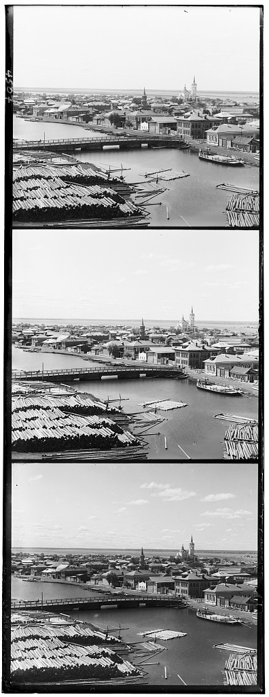
Tobolsk Glass Plates Photograph
Split
Divide the plate into three equal sections representing the Blue, Green and Red channels from top to bottom.
Align
Search over possible x and y translations and find the displacement that gives the highest similarity.
Stack
Apply the estimated shifts and combine the three channels into a final RGB image.
Reference
I used the Blue channel as the reference and aligned the Green and Red channels to it.
Search
Each possible displacement was tested within a user-specified x/y search window.
Metric
Normalized Cross-Correlation (NCC) was used to measure how well two channels matched.
Single-scale exhaustive search
I first implemented a simple exhaustive search on the smaller
JPEG images. For every candidate displacement
(dy, dx), the shifted channel is compared with the
Blue reference. The displacement producing the highest NCC
score is selected.
I also ignored the outer borders when computing the similarity score. This prevents dark borders and scanning artifacts from influencing the alignment more than the actual scene.

Cathedral
G: (dy: 5, dx: 2) · R: (dy: 12, dx: 3)
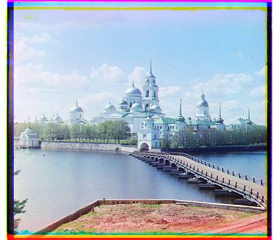
Monastery
G: (dy: -3, dx: 2) · R: (dy: 3, dx: 2)
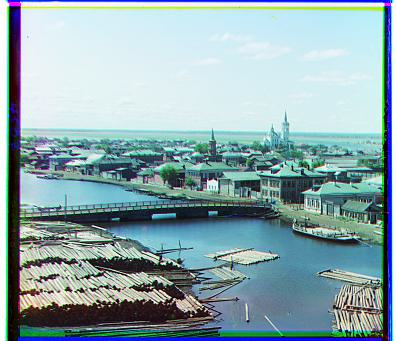
Tobolsk
G: (dy: 3, dx: 3) · R: (dy: 6, dx: 3)
What I learned
The exhaustive search is straightforward and works well when
the images are small. With a search window of
[-15, 15], there are 31 × 31 = 961 possible
translations for each channel.
The main limitation is that this becomes expensive as the
image size and possible displacement increase. This led me
to the next step: using an image pyramid to make the search
more efficient.
Coarse-to-Fine Image Pyramids
The high-resolution TIFF scans contain millions of pixels, and
their channel displacements can be much larger than the
[-15, 15] window used for the JPEG examples.
Instead of searching over every possible displacement at full
resolution, I used a coarse-to-fine image pyramid.
Search
Resolution
I recursively downsampled the image by a factor of two. At the smallest scale, I performed an exhaustive search to obtain an initial displacement. As the algorithm moved back up the pyramid, the displacement estimate was doubled and then refined using a small local search.
Coarse level
Search over [-15, 15] to find an initial
estimate at a small image size.
Refinement
Double the estimated displacement and search a small neighbourhood around it.
Full resolution
Apply the refined displacement to produce the final high-resolution color image.
Results on the provided TIFF images
The pyramid allowed the same alignment procedure to handle substantially larger displacements without performing a huge exhaustive search at the original image resolution.
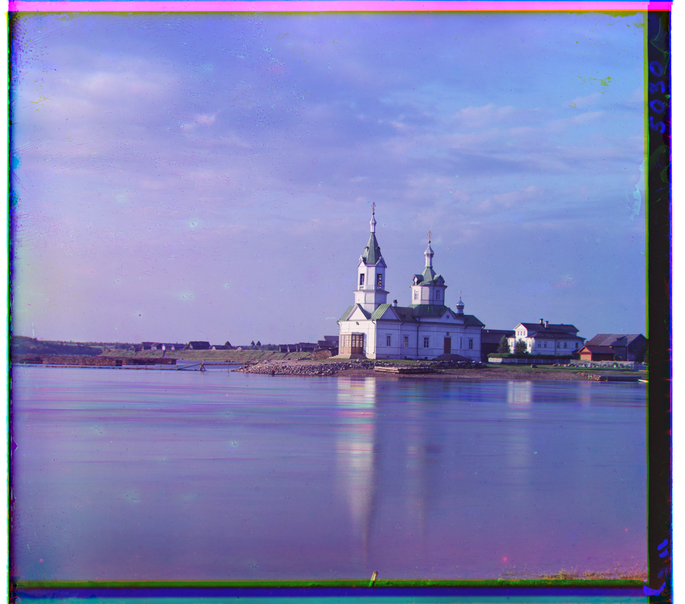
Church
G: (dy: 25, dx: 4) · R: (dy: 58, dx: -4)
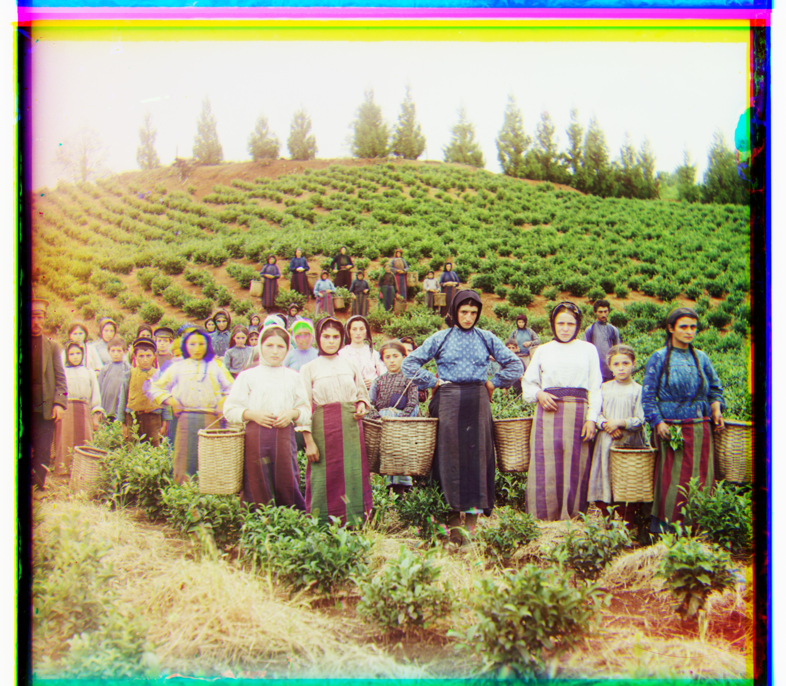
Harvesters
G: (dy: 60, dx: 17) · R: (dy: 124, dx: 13)
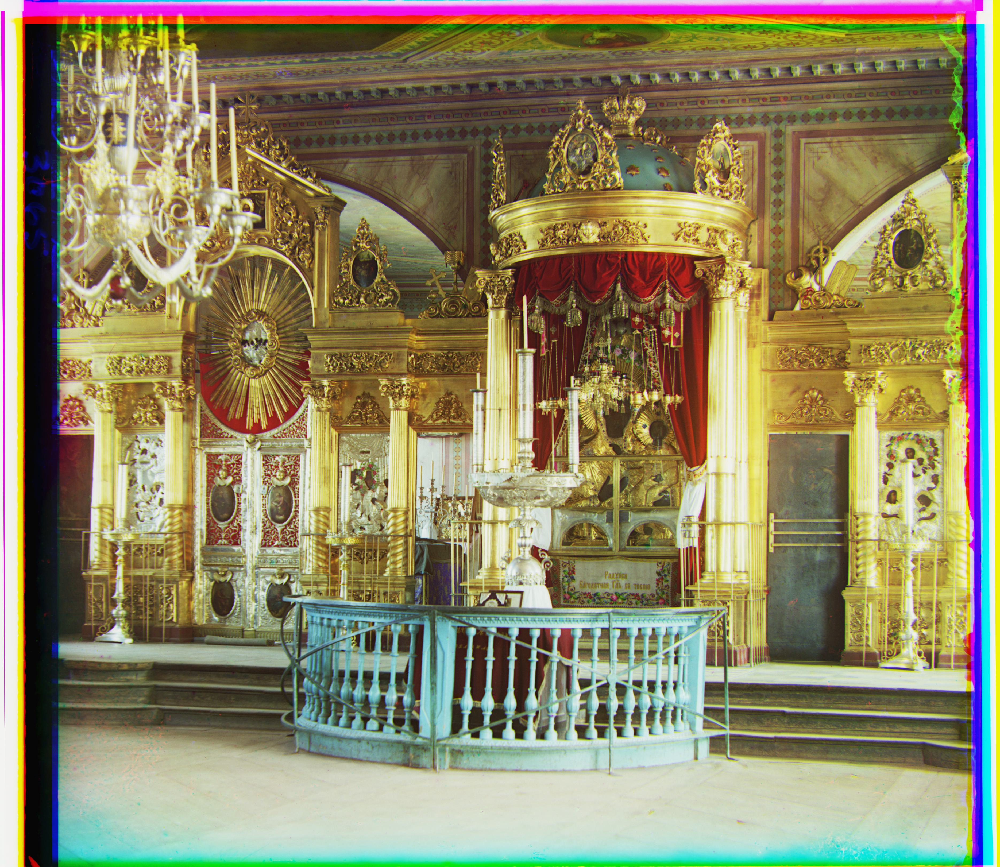
Icon
G: (dy: 41, dx: 17) · R: (dy: 89, dx: 23)
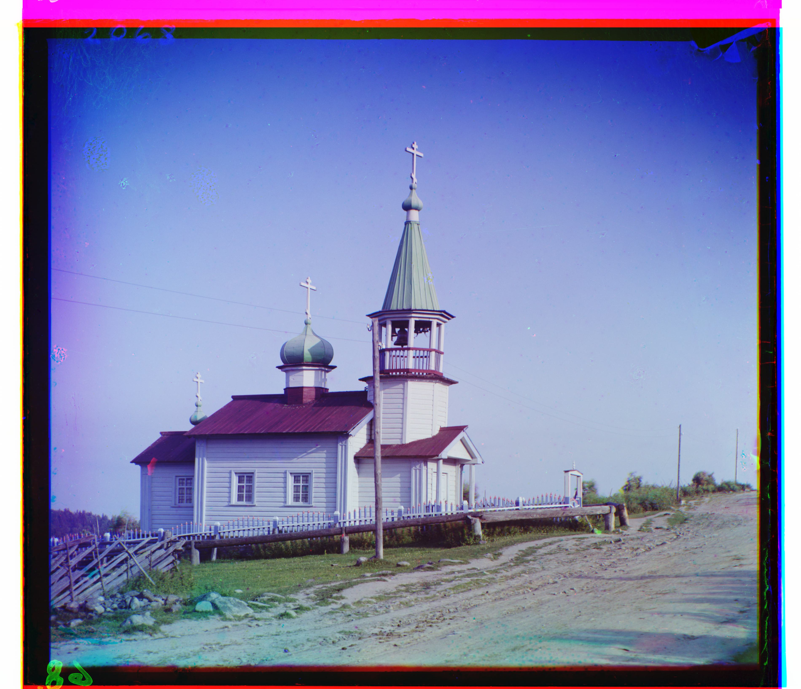
Ilemselga
G: (dy: 40, dx: 7) · R: (dy: 130, dx: 11)
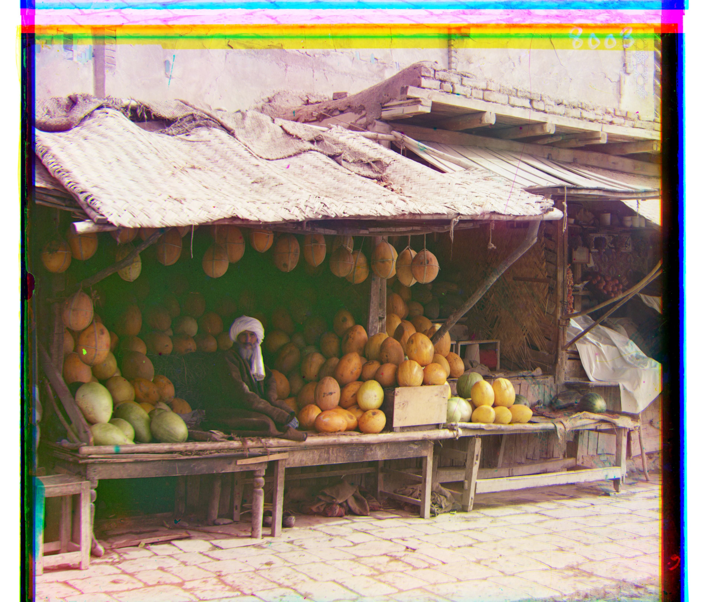
Melons
G: (dy: 82, dx: 11) · R: (dy: 178, dx: 13)
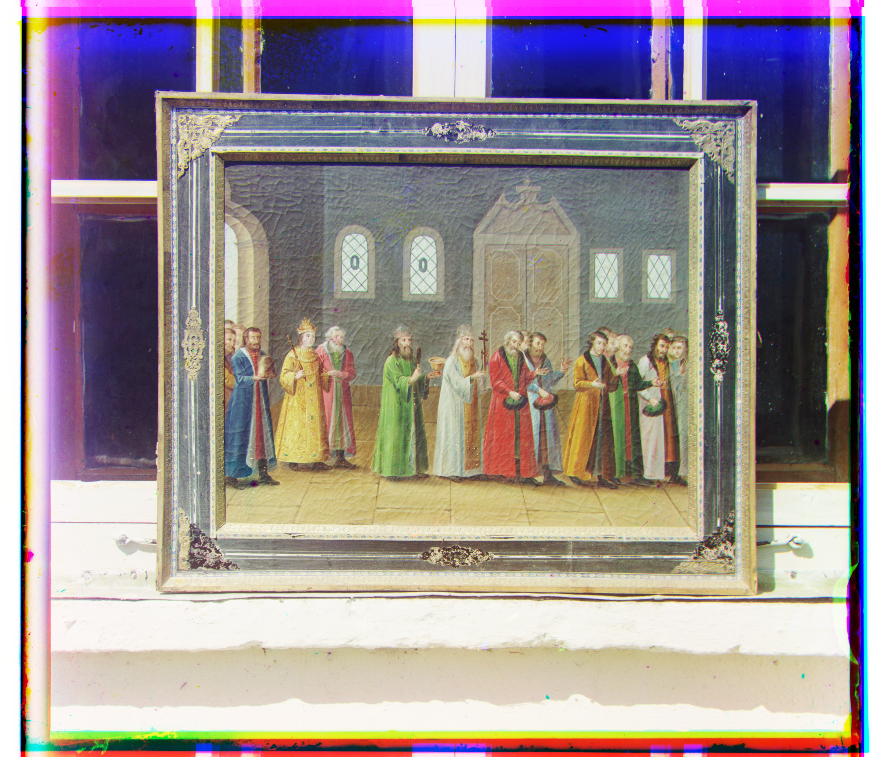
Religious Painting
G: (dy: 28, dx: 3) · R: (dy: 68, dx: 7)
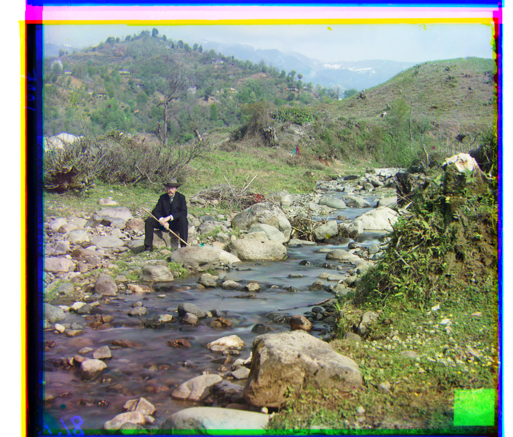
Self Portrait
G: (dy: 79, dx: 29) · R: (dy: 176, dx: 37)
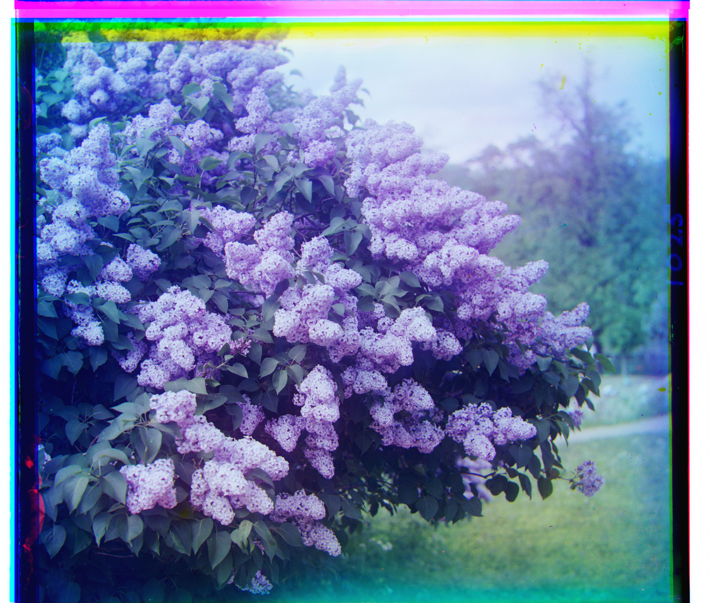
Siren
G: (dy: 49, dx: -6) · R: (dy: 96, dx: -25)
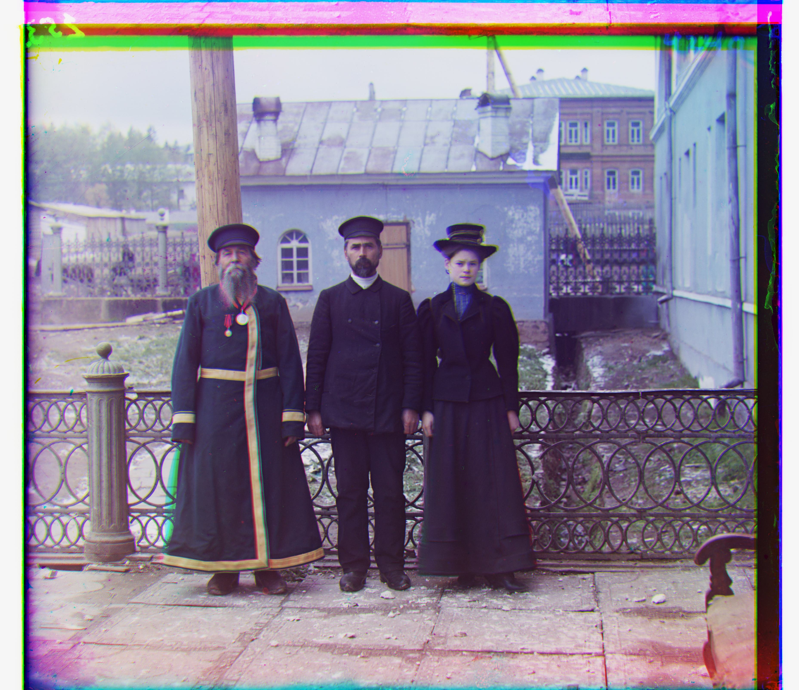
Three Generations
G: (dy: 53, dx: 14) · R: (dy: 112, dx: 11)
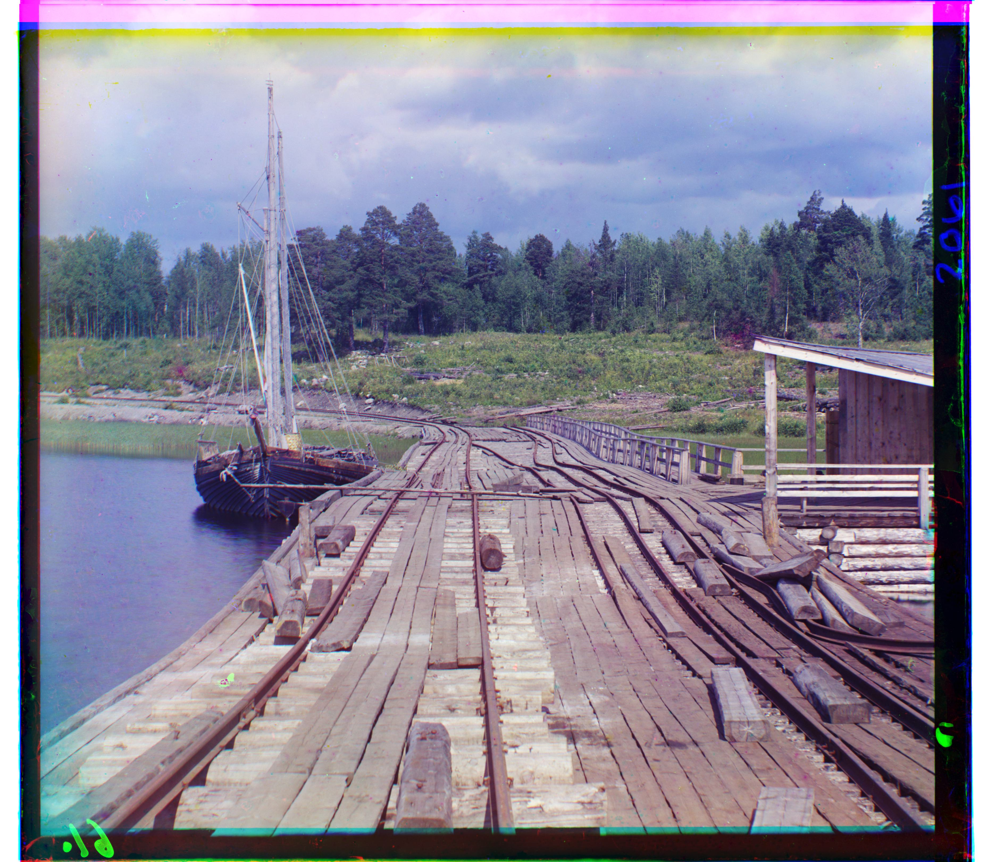
Wharf
G: (dy: 15, dx: -7) · R: (dy: 83, dx: -16)
Estimated Displacements
| Image | Green (dy, dx) | Red (dy, dx) |
|---|---|---|
| Church | (25, 4) | (58, -4) |
| Harvesters | (60, 17) | (124, 13) |
| Icon | (41, 17) | (89, 23) |
| Ilemselga | (40, 7) | (130, 11) |
| Melons | (82, 11) | (178, 13) |
| Religious Painting | (28, 3) | (68, 7) |
| Self Portrait | (79, 29) | (176, 37) |
| Siren | (49, -6) | (96, -25) |
| Three Generations | (53, 14) | (112, 11) |
| Wharf | (15, -7) | (83, -16) |
Why the pyramid helps
At a smaller resolution, a large physical displacement becomes a much smaller pixel displacement. The algorithm can therefore first find the approximate alignment cheaply and then refine it at higher resolutions. This keeps the search local at the expensive full-resolution levels while still allowing the algorithm to recover large overall shifts.
When Brightness Becomes Misleading
Most of the images aligned well using raw pixel intensities, but the Emir image revealed an important limitation of this approach. The same physical object can have very different brightness values in different color channels. This means that two corresponding pixels do not necessarily have similar numerical intensities.
Why does Emir fail?
The Emir's blue robe appears very bright in the Blue exposure but much darker in the Red exposure. Raw-intensity NCC compares these brightness patterns, so it can prefer an incorrect displacement even though the physical robe occupies the same location in both images.
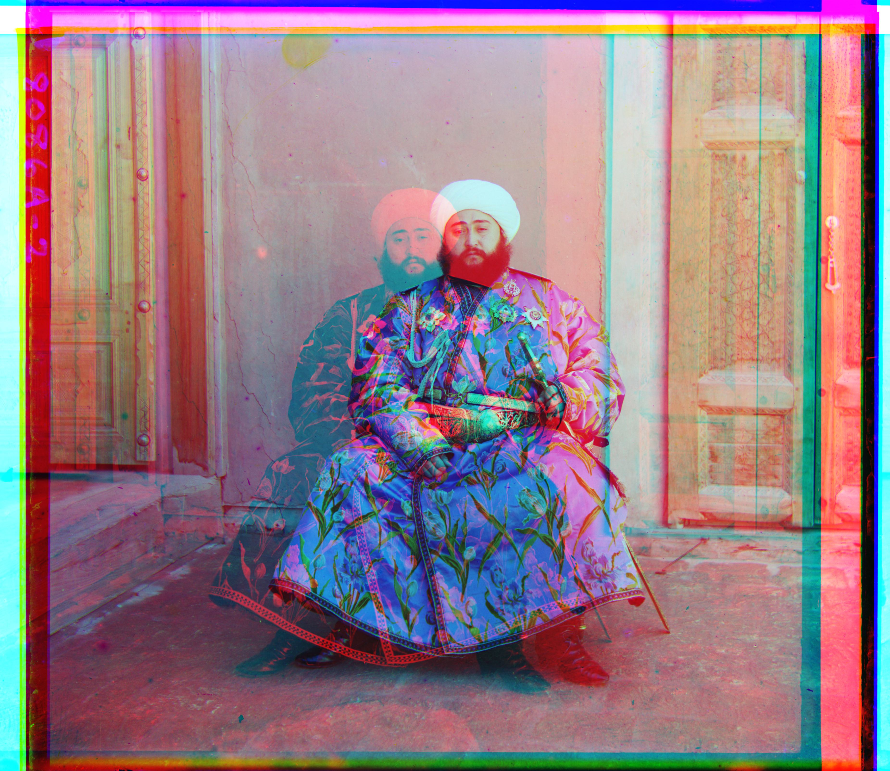
Raw Intensity NCC · Misaligned
G: (dy: 49, dx: 24) · R: (dy: 141, dx: -205)

Correct Alignment
G: (dy: 49, dx: 24) · R: (dy: 107, dx: 40)
What went wrong
NCC is useful because it normalizes the brightness and contrast of the two images, but it still depends on the relationship between their intensity patterns. For the Emir's robe, that relationship is misleading: a bright region in one channel can correspond to a dark region in another. The algorithm therefore receives a stronger similarity signal from the wrong location.
Edge Detection with Sobel Gradients
To make the alignment less dependent on absolute brightness, I changed the features being compared. Instead of applying NCC directly to the raw pixel values, I applied a Sobel filter to each channel first. The resulting gradient magnitude maps emphasize edges and changes in intensity rather than the intensity values themselves.
01 · Input
Each monochrome color channel is processed independently.
02 · Sobel
Horizontal and vertical image gradients are used to create an edge-strength representation.
03 · Align
NCC is applied to the edge maps using the same coarse-to-fine pyramid.
Sobel edge detection allows the algorithm to focus on structural boundaries such as the robe, face and surrounding architecture instead of their absolute brightness.
Why edge filtering works
The Sobel operator measures how quickly intensity changes across an image. Although the Emir's robe changes dramatically in brightness between the color channels, its physical boundaries remain in approximately the same locations. By aligning these structural features instead of raw intensities, the algorithm becomes less sensitive to the different appearances created by the color filters.
Additional Plates from the Library of Congress
To test whether the alignment pipeline worked beyond the provided examples, I selected three additional high-resolution photographs from the Prokudin-Gorskii collection: one JPG and two TIFF images. Using different file formats helped me check that the pipeline could handle images with different resolutions and file representations, rather than relying only on the provided examples.
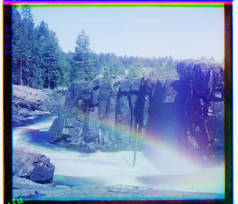
Vodopad Girvas - JPG
G: (dy: 1, dx: 0) · R: (dy: 8, dx: 0)
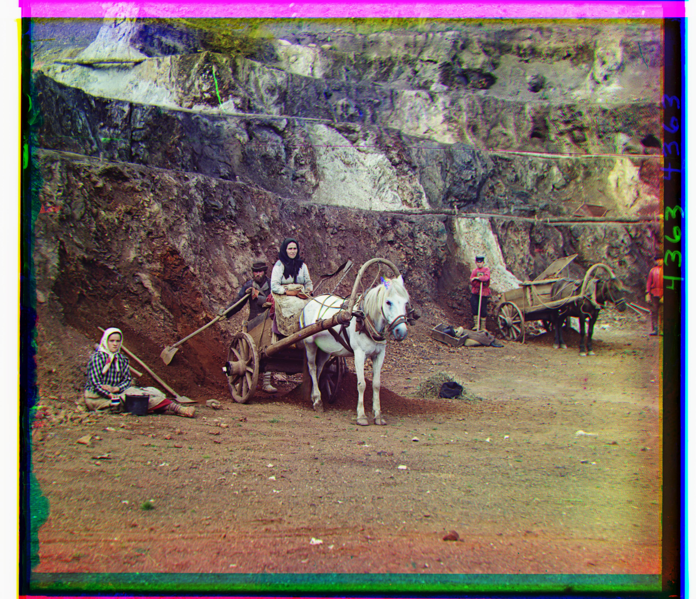
Rabota na Bakal skom rudniki e - TIFF
G: (dy: 39, dx: 26) · R: (dy: 92, dx: 42)
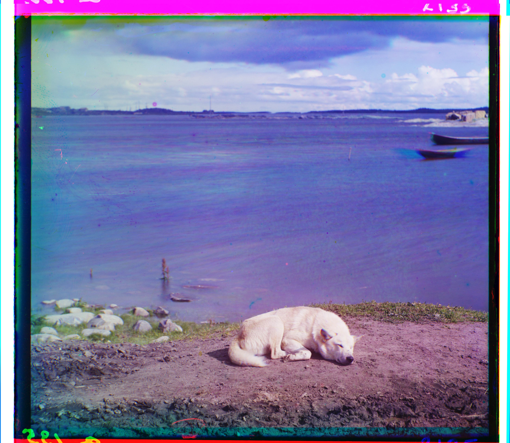
Laika (dog) - TIFF
G: (dy: 27, dx: 3) · R: (dy: 115, dx: 6)
Final Takeaway
This project started with a relatively simple alignment problem, but the results showed how much the choice of representation matters. Exhaustive search worked well for the smaller images, while the image pyramid made it practical to align the much larger TIFF scans. The Emir failure then showed that raw pixel intensity is not always a reliable feature for matching different color channels. Using Sobel edges provided another way to describe the images based on their structure, allowing the alignment procedure to handle this difficult case more effectively.